-
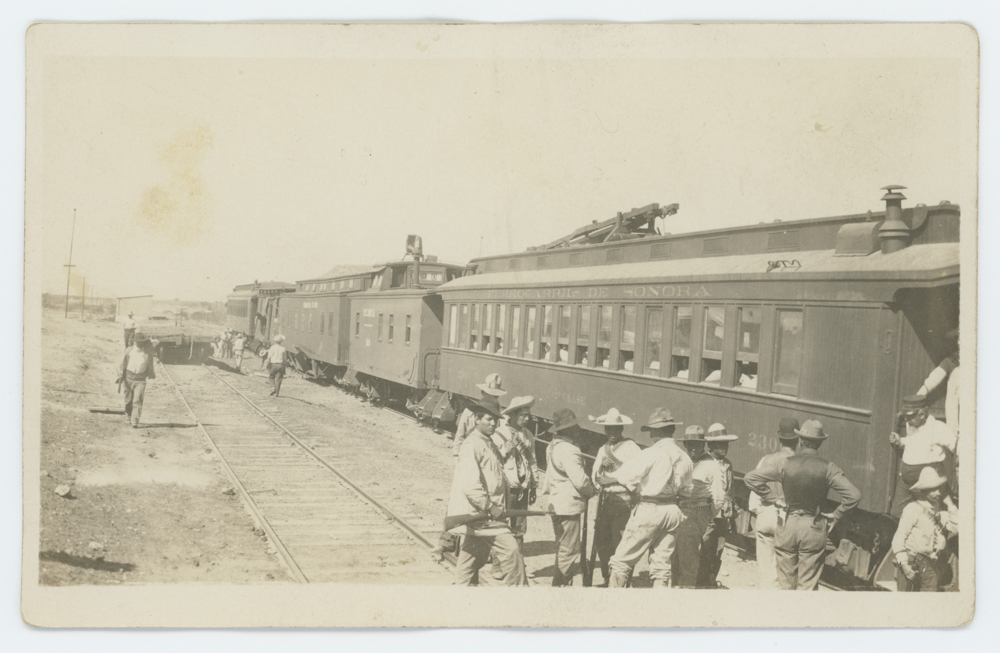
1878-1882
El Ferrocarril de Sonora construye la primera línea ferroviaria en Sonora de Nogales a Guaymas
-
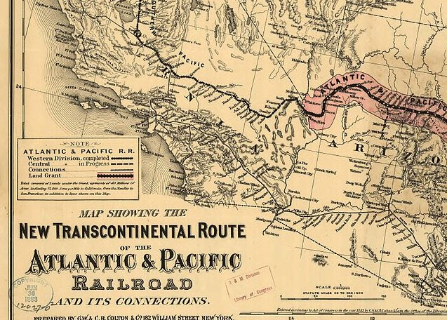
1898
La ATSF intercambia la línea de Sonora Railway por la línea Southern Pacific California Mojave. El Sonora Railway está arrendado por Southern Pacific Railroad.
-
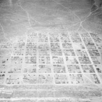
1899
La Compañía Phelps Dodge incorpora al Ferrocarril de Narcozari una línea de Agua Prieta a Narcozari
-
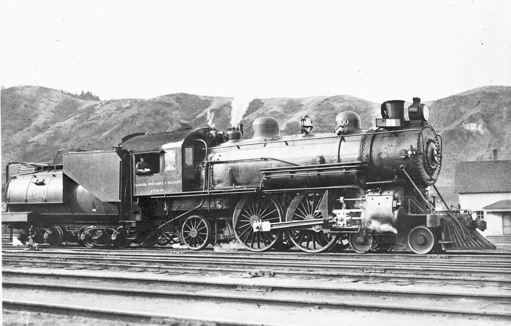
1902
La Cananea Consolidated Copper Company (Cananea) incorpora el Ferrocarril Río Yaqui y Pacífico. Southern Pacific pronto asume el control y construye una línea de Naco a Cananea.
-
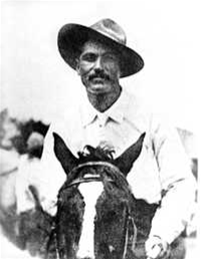
1907
El guardafrenos Jesús García salva el pueblo de Narcozari mientras un tren cargado de TNT para minería se incendia. García se apresuró a poner su tren en reserva a toda velocidad cuesta abajo a las afueras del pueblo, donde ocurrió una gran explosión que mató a Jesús García, salvando así el pueblo de Narcozari.
-
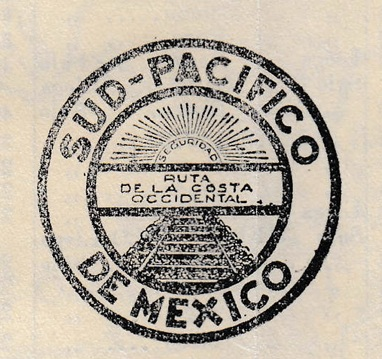
1909
El Pacífico Sur crea el Sud Pacífico de México.
-
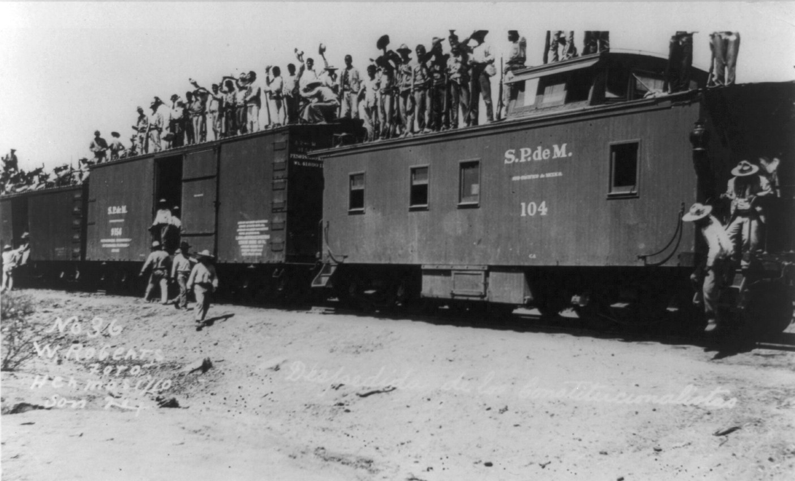
1910-1920
La Revolución Mexicana estalla en México y retrasa el avance del SPdeM para llegar a Guadalajara
-
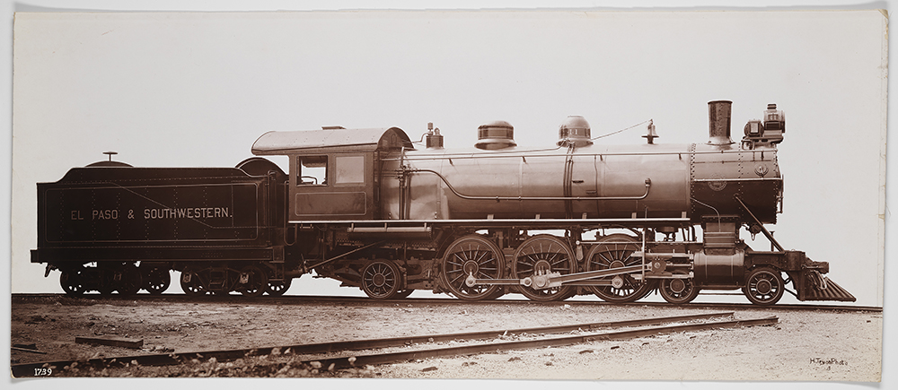
1924
El SP compra el Ferrocarril El Paso & Southwestern que también incluía el ferrocarril Narcozari.
-
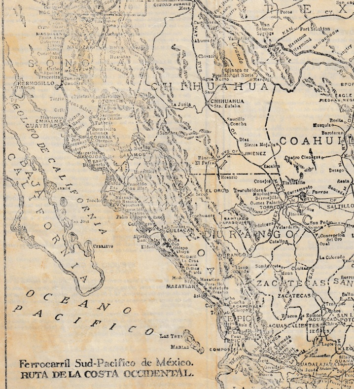
1927
El SPdeM llega a Guadalajara
-
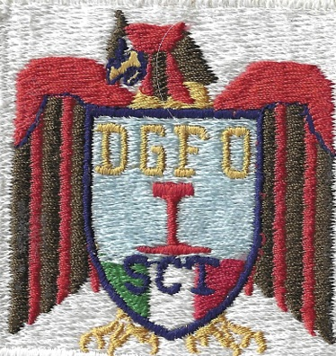
1937-1947
El Ferrocarril Sonora-Baja California es creado por el Gobierno Mexicano para conectar Mexicali, Baja California con Sonora, obra se retrasó debido a la Segunda Guerra Mundial, el SBC conecta la línea SPdeM en Benjamin Hill.
-
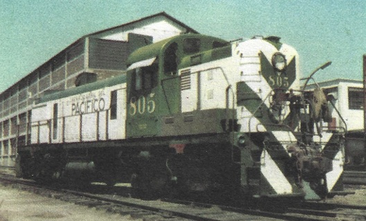
1951
El SP vende al Gobierno mexicano en diciembre, se crea el Ferrocarril del Pacífico
-
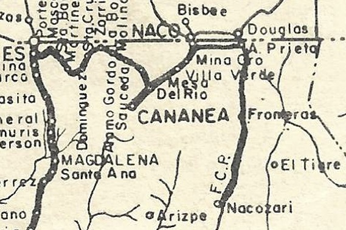
1965-1967
La SP vende el Ferrocarril Narcozari al Gobierno Mexicano pasando a formar parte del sistema FCP, se construye una Línea desde Naco para llegar a Agua Prieta
-
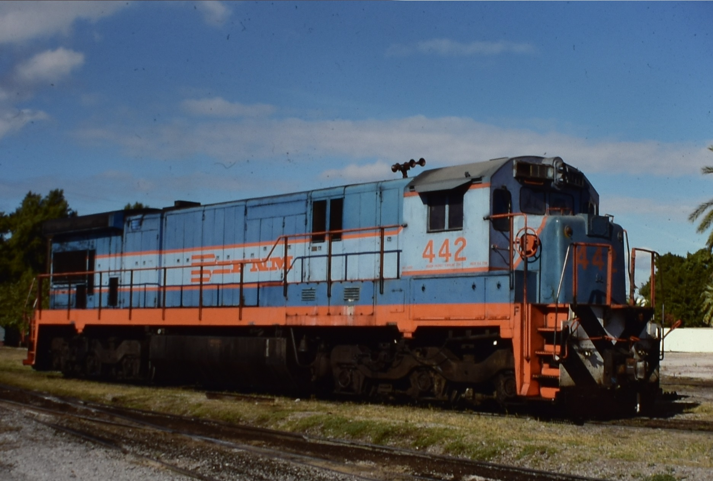
1987
Todos los Ferrocarriles de México pasan a formar parte del sistema FNM SBC y FCP pasan a formar parte de la región Pacífico
-
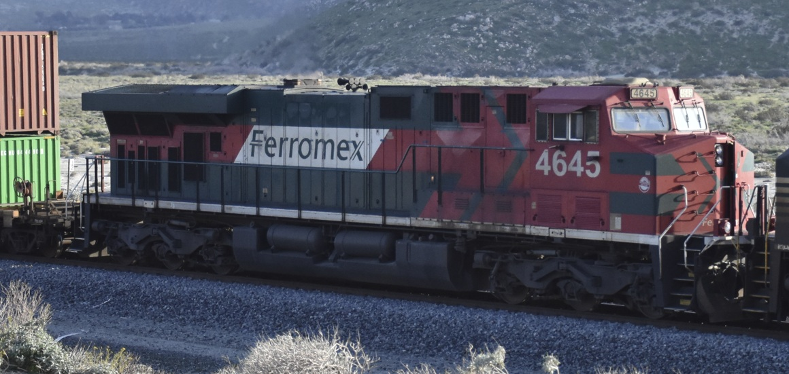
1994-1998
Los ferrocarriles de México se privatizan. Los activos de SBC y FCP se venden a Ferromex.
-